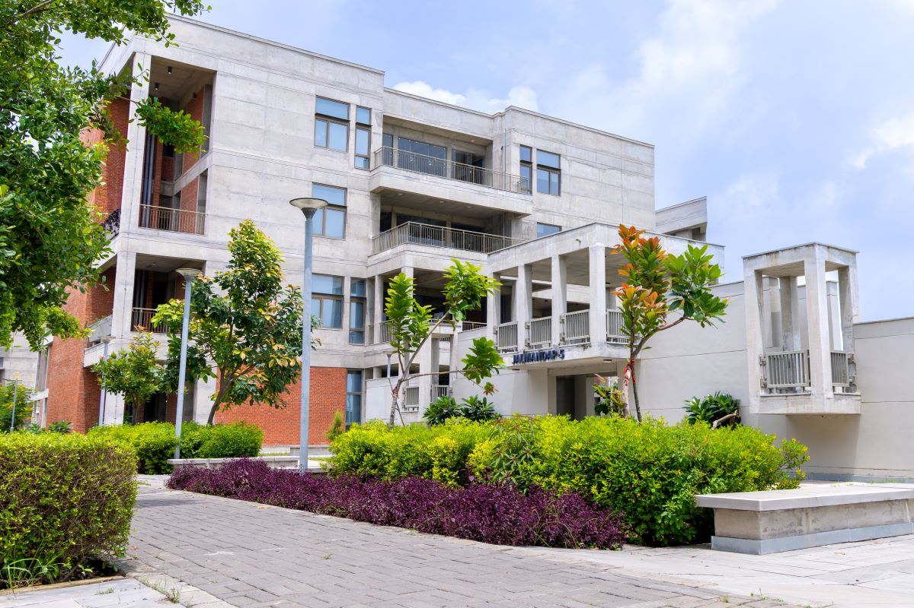
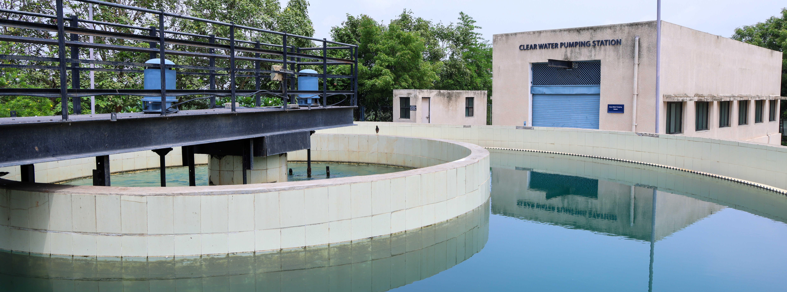
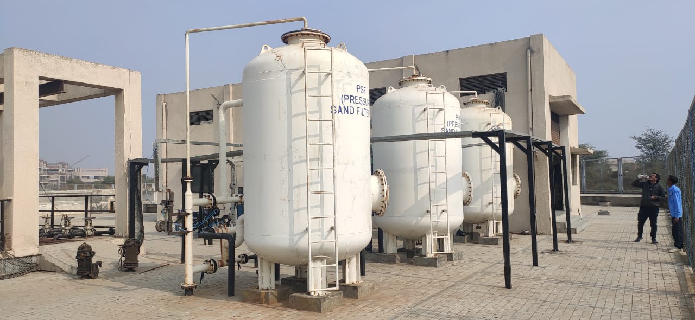
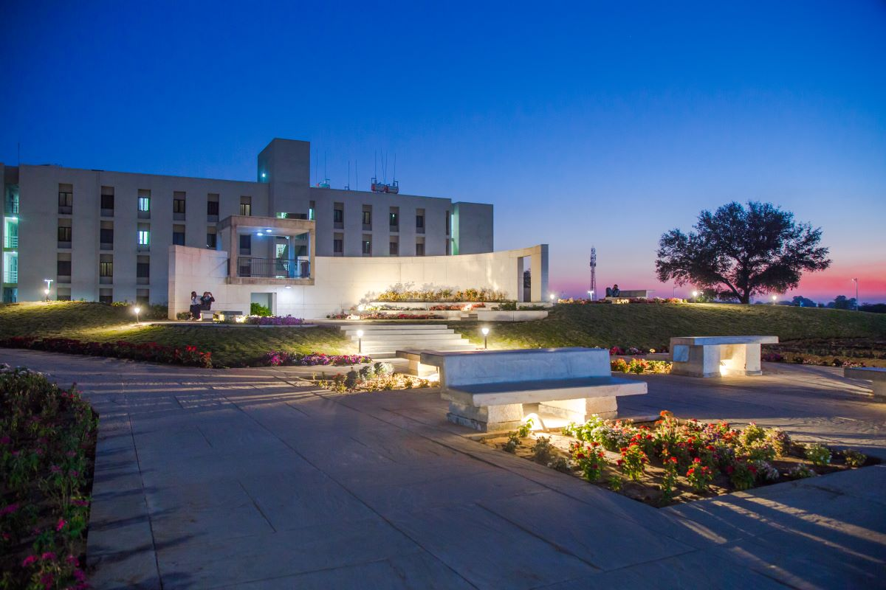
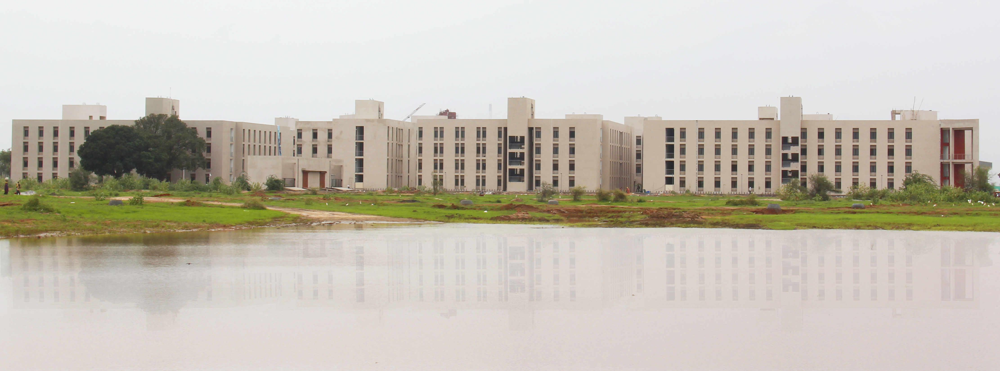
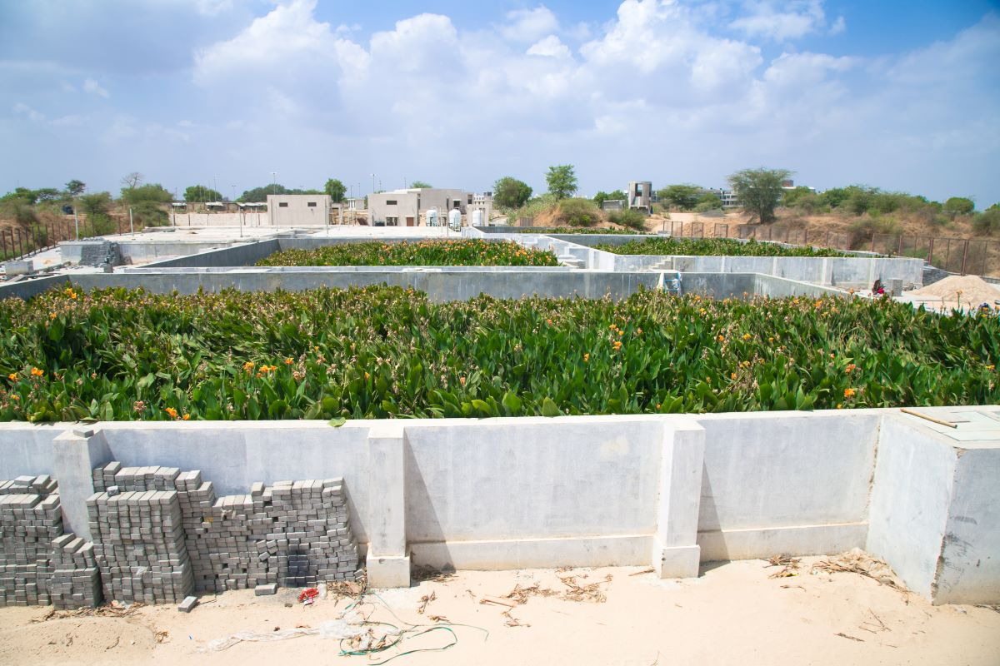
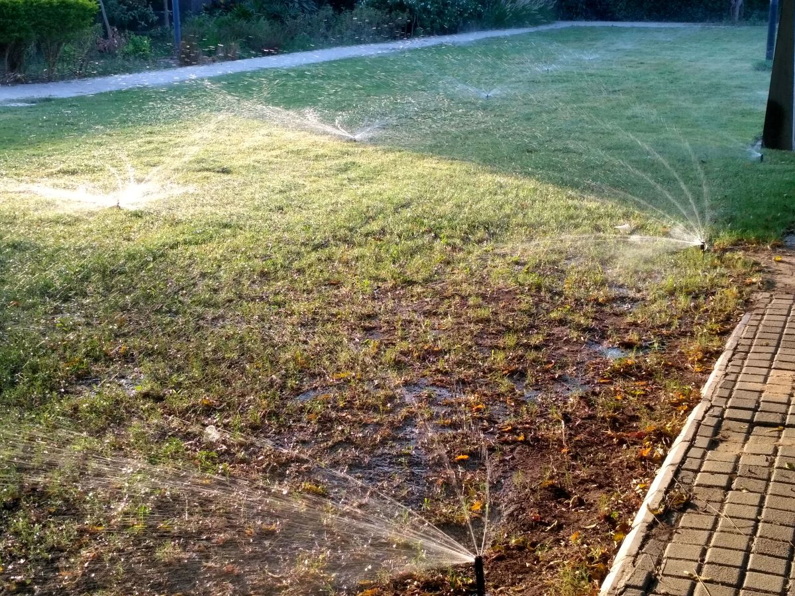
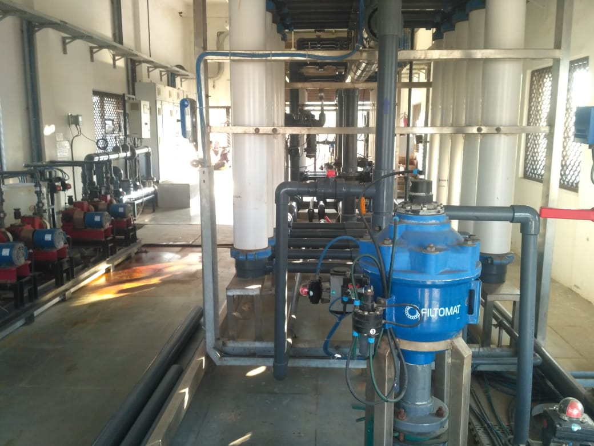
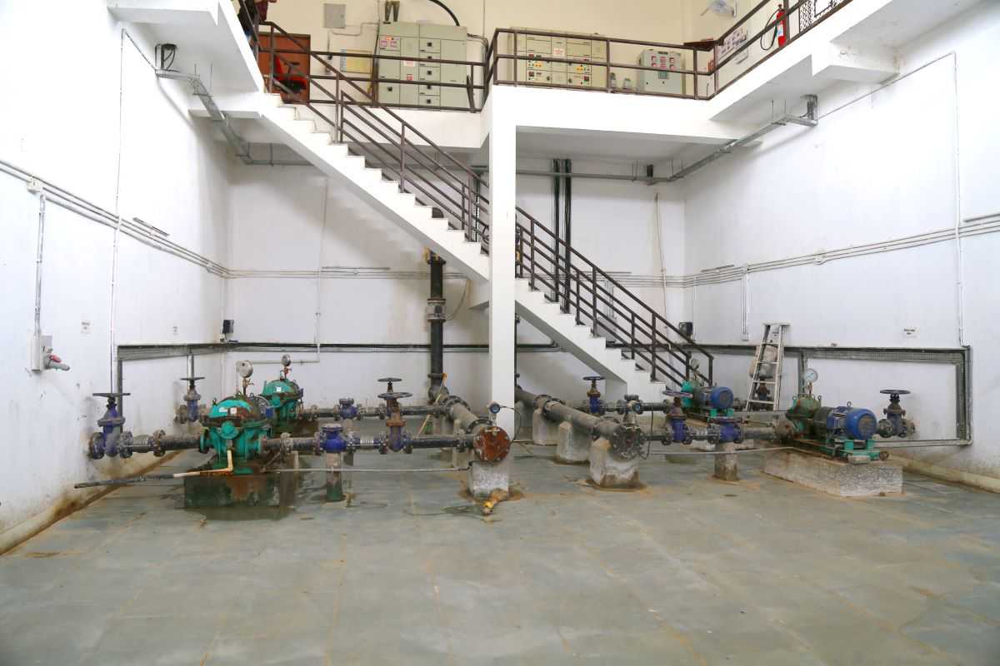

IIT Gandhinagar sits in a dry part of Gujarat, so the campus treats water as something precious. It is harvested, treated, reused and watched over at every step of its journey.

Water arrives from the Narmada canal and goes through the campus's own treatment plant. There it is settled, filtered and disinfected until it meets drinking-water standards.

Inspired by Gujarat's traditional vavs, five underground Jal Mandaps collect rain from rooftops across campus. On the surface they're places to gather; below, they hold millions of litres of rainwater.

In the monsoon, rain flowing across campus runs into two ponds formed in natural hollows. They recharge the groundwater and have become a home for migratory birds.

Wastewater from campus buildings flows to a treatment system that runs on gravity, with no chemicals and no electricity. Flowering Canna indica plants do much of the work, their roots filtering and purifying the water.

There's no sewage line out of IIT Gandhinagar. Treated water is reused to irrigate campus greenery through drip lines and sprinklers, mostly in the cool hours when less is lost to evaporation.

Smart meters track water across the campus, valves close before tanks overflow, and reported leaks are routed straight to the repair team. Spot a leak? Report it to office.cd@iitgn.ac.in

Close the tap when you're done, report leaks when you see them, and drink straight from the tap. Small habits keep IIT Gandhinagar water-wise.